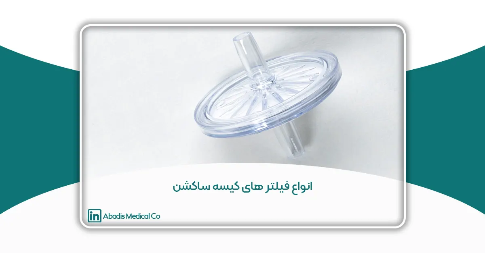
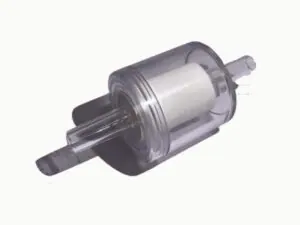
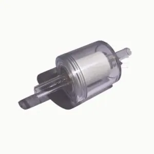
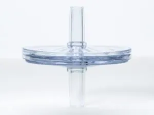
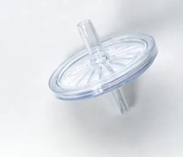
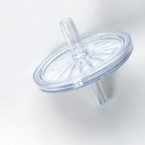
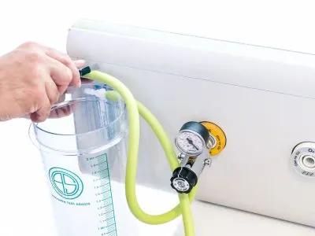
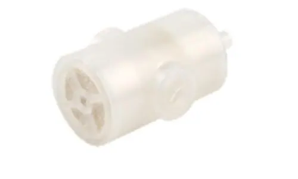

در این مقاله قصد داریم شما را با انواع فیلترهای کیسه ساکشن آشنا کنیم. همچنین در کنار این اطلاعات ارزشمند، درباره تاریخچه این نوع تجهیزات پزشکی و ویژگیهای آنها هم مطالبی جمعآوری کردیم. سعی بر آن است که سطح اطلاعات شما را افزایش دهیم که هنگام خرید، قدرت تشخیص بهتر و بیشتری داشته باشید. پس تا انتهای مقاله ما را همراهی کنید.
فیلتر HME دستگاه ساکشن شرکت مخازن طبی آبادیس
سفری در تاریخ دستگاههای ساکشن
اولین بار دستگاه ساکشن توسط فردی به اسم یانکاور اختراع شد. ابتدا این دستگاه برای بیماران سرپایی توسط بیمارستانی در شهر نیویورک ایالات متحده آمریکا مورد استفاده قرار گرفته بود. این دستگاه با کمک فشار منفی و خلا باعث میشود که مایعات، ضایعات و هوا به صورت مکش وارد دستگاه شوند.
این مایعات یا ضایعات مورد نظر توسط کاتتر از ناحیه مد نظر مکیده و جمع آوری میشوند. کاتتر لولهای است تقریبا منحنی شکل بوده و سر نازل آن دارای حفرههایی برای مکیدن مایعات است. انحنای کاتتر برای قدرت مانور بهتر در عملهای جراحی به این صورت طراحی شده است.
در کنار این موارد میدانیم که هر دستگاهی دارای قطعات جانبی دیگری هم است! برای مثال لولههای رابط، چرخ نقاله، فیلتر، مخزن ساکشن و غیره. در این مقاله یعنی “انواع فیلترهای کیسه ساکشن” قصد داریم شما را بیشتر با این قطعه آشنا کنیم.
نسخه اولیه این کاتترهای از جنس استیل و فولاد ضد زنگ ساخته میشد. آخرین بازمانده از قطعات اولین ساکشن که در سالهای ۱۸۰۰ میلادی ساخته شده بود، در سال ۱۹۰۷ کشف شد. امروزه نسخههای مدرنیزه شده این کاتترها تولید میشوند که در بیمارستانها یا کلینیکها مورد استفاده قرار میگیرند.
فیلترهای کیسه ساکشن در دستگاه ساکشن چه استفادههایی میشود؟
از دستگاه ساکشن استفادههای بسیار زیادی در صنعت پزشکی میشود. برای مثال اغلب استفاده از این دستگاه برای تخلیه خون از ناحیه جراحی حین عمل است. پرستاران و دستیاران پزشک جراح در حین عمل با استفاده از کاتتر خونریزیها را تخلیه میکنند که محل مورد نظر برای جراحی پاک باشد.
همچنین برای تخلیه برخی دیگر مایعات هم در حین عمل، از چنین دستگاههایی در اتاقهای عمل استفاده میکنند. از موارد دیگر استفاده این دستگاههای ساکشن میتوانیم به نگه داشتن و گرفتن تومور، غدهها یا چیزهای دیگر در محلی که پزشک مشغول به جراحی است، اشاره کنیم.
از سایر موارد استفاده که میتوانیم در مبحث “انواع فیلترهای کیسه ساکشن” به آن اشاره کنیم، تخلیه آبسه یا حفرههای آبسه است.
محصولات مرتبط شرکت مخازن طبی آبادیس





قبلی
بعدی

نمونهای از فیلتر آنتی باکتریال دستگاه ساکشن شرکت مخازن طبی آبادیس
آیا دستگاههای ساکشن جهت مصرف شخصی هم وجود دارند؟
بله این دستگاهها فقط برای انجام چنین کاری طراحی، ساخته و تولید نمیشوند. حتی موارد بسیار کوچک و دستی طراحی شدهاند که کاربردهای کاملا متفاوتی دارند. برای مثال بانوان برای ترشح شیر و جهت تغذیه نوزاد خود میتوانند از ساکشنهای دستی استفاده کنند.
حتی برای مردان هم یک سری مدلها جهت نعوظ ساخته شده است که کاربرد آزمایشی، پژوهشی و درمانی دارند.
آیا دستگاههای ساکشن انواع مختلفی دارند؟
در ادامه مقاله انواع فیلترهای کیسه ساکشن به انواع دستگاههای آن میپردازیم. به طور کلی دستگاههای ساکشن ۲ دسته هستند که شامل پرتابل و سانترال میشوند. دستگاههای پرتابل قابلیت حمل دارند، اما در مقابل دستگاههای سانترال این ویژگی را ندارند.
۱. ویژگیهای دستگاههای ساکشن سانترال چیست؟
دستگاههای سانترال کیسههای ساکشن ثابت یا یکبار مصرف دارند. از دستگاههای سانترال با مخزن ثابت هم میتوان چندین مرتبه جهت انجام عمل ساکشن استفاده کرد. البته باید این موضوع را در نظر گرفت که ممکن است برای بیماران یا کادر پزشکی مشکلاتی به همراه داشته باشند.
برای مثال دستگاههایی که مخزن ثابت دارند، مستعد شیوع بیماریها از فردی به فرد دیگر هستند. همچنین میزان انتشار عفونت هم نسبت به مخازن یک بار مصرف بسیار بالاتر است!
۲. دستگاههای ساکشن پرتابل چه ویژگیهایی دارند؟
این دستگاهها به خاطر قابلیت حمل و راحتی، پرتابل در نظر گرفته میشوند. در هر شرایطی (در بیمارستان) قابل استفاده خواهند بود. این ویژگی دقیقاً بر خلاف دستگاههای سانترال است. برای کار کردن با دستگاههای پرتابل باید کیسههای ساکشن یکبار مصرف استفاده کرد!
اجزای اصلی دستگاههای ساکشن چه هستند؟
قبل از اینکه به صورت تخصصی وارد بحث انواع فیلترهای کیسه ساکشن شویم، لازم است در رابطه با اجزای تشکیلدهنده اصلی این دستگاه اطلاعاتی کسب کنید.
تمامی دستگاههای ساکشن از کیسه یا مخزن ساکشن، گیج تنظیم و کنترل وکیوم فشار دستگاه، پمپ دستگاه، وکیوم، پیچ تنظیم و برخی لولههای رابط تشکیل شدهاند.
مهمترین جزء دستگاه ساکشن چیست؟
نمیتوانیم به صورت انحصاری قطعهای را به عنوان اصلیترین جزء این دستگاهها نام ببریم. زیرا هر کدام به نوبه خود نقش خاصی را برای استفاده از این دستگاه ایفا میکنند. اما اگر در رابطه با پیشگیری و جلوگیری از انتشار بیماریها یا عفونت صحبت کنیم، کیسههای ساکن و انواع فیلترهای کیسه ساکشن مهمترین قطعات هستند.

انواع فیلترها و تفاوت آنها با یکدیگر
برای این که دید حرفهایتری نسبت به این دستگاه داشته باشید، شما را دعوت میکنیم که با انواع فیلترهای کیسه ساکشن آشنا شوید!
۱. فیلتر هیدروفوبیک یا فیلترهای آنتی باکتریال
این فیلترها عمدتاً برای جلوگیری از آسیب دیدن پمپهای مکش در اثر فشار زیاد مایعات (اصطلاحاً سیل) و آلودگی ناشی از مایعاتی که در حال خارج شدن هستند، استفاده میشوند. راندمان این نوع فیلترها بسیار بالا است!
اندازه ذراتی که میتوانند از این فیلتر عبور کنند، ۰.۳ میکرون است. این فیلترها در رابطهای اضافه، سایزها و اندازههای متفاوت تولید میشوند که آنها را برای قرار دادن در طیف گستردهای از موارد استفاده مناسب کند!
2. فیلترهای HME
این مورد از انواع فیلترهای کیسه ساکشن، حرارت و رطوبت را کنترل میکند. این دستگاه با مرطوب ساختن و فیلتر کردن هوایی که بیمار از طریق استوما تنفس میکند، باعث کاهش تولید مخاط و سرفه میشود. پس از حنجره، شما از طریق استومای گردن خود تنفس میکنید.
بدان معنی است که هوایی که وارد ریههای شما میشود، خنکتر بوده و کمتر از آنچه که باید مرطوب است. در نتیجه ریههایتان با تولید مخاط بیشتر واکنش نشان میدهند و نای شما ممکن است تحریک شود. در این صورت احتمال دارد شروع به سرفههای زیادی کنید.
درنتیجه بیمارانی که با چنین مشکلات تنفسی مواجه هستند، میتوانند با استفاده از این فیلترها، عملکرد تنفسی خود را بهبود بخشند.
۳. فیلترهای قطعکننده (مسدود شونده)
دسته دیگری از انواع فیلترهای کیسه ساکشن، فیلتر قطعکننده است. هدف از طراحی و ساخت این فیلتر جلوگیری از سرریز شدن مایعات جمعآوری و مکیده شده توسط دستگاه ساکشن است! این فیلترها به صورت یکبار مصرف استفاده میشوند. همچنین فیلترهای قطع کننده باعث جلوگیری از انتشار هر گونه دود و مایعات مضر، عفونی و آلوده به محیط خواهند شد!
۴. فیلتر تراکئوستومی (به همراه درگاه اکسیژن)
این نوع فیلترها برای تمیز کردن و تخلیه کردن مجاری تنفسی استفاده میشوند. این قطعات دارای دو عدد فیلتر داخلی و ۲ عدد مخزن مجزا هستند که کیفیت و قدرت جذب بالایی دارند. این دستگاه از ورود باکتریها یا فاکتورهای بیماریزا جلوگیری میکند!
استفاده از چنین فیلتری بهترین و مطمئنترین راه برای خروج ضایعات مجاری تنفسی بیمار به شمار میرود. همچنین این دستگاه از ورود فاکتورهای خارجی، ترشحات یا ضایعات مایع دهانی و همچنین محتویات معده به ریه تا حد چشمگیری جلوگیری میکند.
5. فیلترهای دیاترمی (Surgical Smoke)
دستگاههای حرارتی، لیزری یا الکترودها برای سوزاندن یا تشریح بافتها در طول عمل جراحی استفاده میشوند؛ بنابراین این امر باعث تولید گازهای گلخانهای در اتاق جراحی خواهد شد! این گازها ممکن است مشکلاتی را برای جراحان و پرستاران در چنین محیطی ایجاد کند!
به عنوان مثال، دود میتواند دید مستقیم بر ناحیه جراحی را مختل کند! همچنین در اتاق عمل، دود ممکن است به یک عامل تحریککننده تبدیل شود، به خصوص برای کسانی که مشکلات تنفسی دارند.
در نتیجه تخلیه یا استخراج دود جراحی به صورت اختصاصی میتواند در کاهش بروز برخی مشکلات بسیار مؤثر باشد! برای این کار باید از یک فیلتر مناسب برای استخراج یا حذف ذرات و بوی متصاعد شده، استفاده شود. در چنین شرایطی از فیلترهای دیاترمی برای بهبود تهویه هوای اتاق عمل استفاده میشود!
جمعبندی
در این مقاله به انواع فیلترهای کیسه ساکشن پرداختیم که شامل فیلترهای آنتی باکتریال، فیلترهای HME، تراکئوستومی، فیلترهای قطع کننده یا دیاترمی میشوند. برای اینکه بیماری، آلودگی یا عفونت انتشار پیدا نکند، بهتر است از کیسههای ساکشن یکبار مصرف و همچنین فیلترهای یکبار مصرف استفاده کنید.